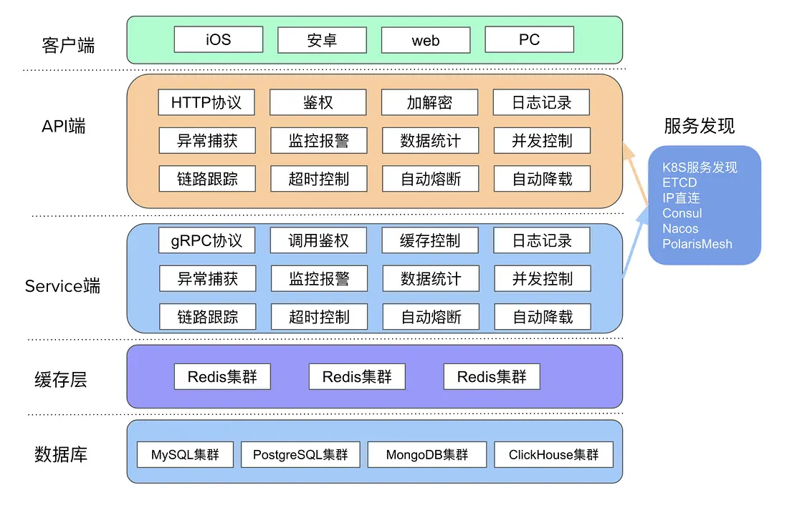

微服务拆分与 go-zero 选型
顾名思义，其实就是微小的服务。
最早之前的业务系统都是单体项目，像我们之前的五代博客，七代博客，都是属于单体项目
这样的单体项目有什么弊端呢？
例如后端要改一个很小的地方，那么都需要整个项目重新构建，然后停止整个项目，然后重启项目
所以企业项目发布都是在深夜就是这个原因
那么，如果是微服务呢？
可以将大系统按照功能或者产品进行服务拆分，形成一个独立的服务
以我的博客为例
我是不是就可以拆成用户服务和文章服务呢
那么我改文章相关的代码，用户服务就可以不用管他，只用关心自己的服务即可
但是本来之前大家在一起和和睦睦的，突然一分开，瞬间就有很多事情需要去完成
例如：
- 服务与服务间通信怎么解决？
- 怎么找到每一个服务的地址？

简单的说，go-zero帮助我们去编写那些重复代码
使开发者更加关注业务
什么时候该用go-zero
既然go-zero这么多功能，那么我们是不是就无脑上go-zero了？
答案并不是这样的，实际上，go-zero给我们哪些开箱即用的方法，我们都是要对他进行修改的
实际上，很多小项目，并不需要go-zero那样的代码分层
一味的使用代码分层只会让代码复杂度上升
并且，是否使用微服务以及服务的拆分，在实际的工作场景中比微服务本身更加重要
所以，如果你是要做个人项目（学习除外），其实是不建议用微服务架构的，不管你是不是用go-zero
在我看来，最适合微服务架构的项目只能是公司的大型项目，一个组负责其中一个服务的开发
需要准备的工具
- etcd
- mysql
- protoc （转rpc代码的）
- goctl